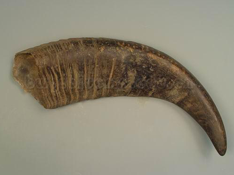

- 沈丕安提示：
- 紫癫有几种，腿上一片一片的，大部分都是血管炎，血小板减少也有紫癫，它很细很细，针尖那么细的，一点点红颜色的很多，但血小板减少也有一片一片的，如果血管炎造成的，就是一片一片的紫斑。有的很大，一大片，有的一小片，大大小小都有，腿上有，手上、背上也会有，大部分都是小腿上面。紫癫分为血小板减少性紫癫，过敏性紫癫，还有红斑狼疮引起的紫癫以及血管炎，我们常见的就三项。不管哪一种，中医都叫血热，热了以后血就渗出来了。我们中医古书上有紫癫这两个字的，我们又叫葡萄疫，像葡萄一样的也叫葡萄斑。这种情况我们用清热凉血的方法，有瘀的我们还要化瘀，叫凉血化瘀，古方有一个叫犀角地黄汤，现在犀角没有了，所以我们用水牛角代替，水牛角也有效果，就是比犀角的力量弱一点。水牛角用30克到60克，有点气味的，第二味就是生地30克，有点滑肠，如果剂量小一点用15克也可以。如果还有些瘀呢，我们就用丹皮、广郁金、莪术来化瘀。
- 主药介绍： 【别名】处方名：水牛角、水牛角粉。

水牛角
水牛角
【来源】牛科动物水牛的角。一般用水牛角尖。
【性味与功效】 味咸，性寒。凉血止血，清热解毒。
【传统应用】主治热病头痛，壮热神昏，斑疹麻痘，吐血、衄血等病症。
【传统方剂】单方水牛角末《子母秘录》：水牛角，烧末，酒服，治疗血上逆心，烦闷刺痛。
【不良反应】1．传统文献 《本草纲目》：无毒。
2．临床体会 水牛角无毒。在常规剂量内水煎服没有不舒反应。长期服用或大剂量30g以下水煎服也没有明显不良反应。